CSE 4/546 Final Project · University at Buffalo
F1-Informed Multi-Agent Reinforcement Learning
Modeling Driver Psychology and Experience in Cooperative MARL
1. Project overview
The main question this project tries to answer is whether giving agents access to a simple psychological state variable actually helps them learn better in a cooperative multi-agent setting. The idea came from watching how Formula 1 drivers behave differently depending on their experience level and how their confidence changes over the course of a race. A rookie like Antonelli will make noisier decisions than a veteran like Sainz, and a driver who just got overtaken will likely perform worse for the next few laps.
To model this, I pulled real 2025 F1 lap-time data using the FastF1 API and used it to give each agent
a driver-specific experience profile based on how consistent their lap times were across
the season. A small wrapper around the PettingZoo environment then adds noise to each agent's actions
scaled by their experience, and tracks a psych_state variable that goes down after bad team
rewards and slowly recovers over time.
Two setups are compared throughout the project. The tabular Q-learning baseline shows that
including psych_state in the state gives higher Strategy Resilience Score (SRS) even when the
raw returns look similar. The MAPPO runs test whether the same pattern holds with deep RL
and also validate the whole pipeline on a standard benchmark environment.
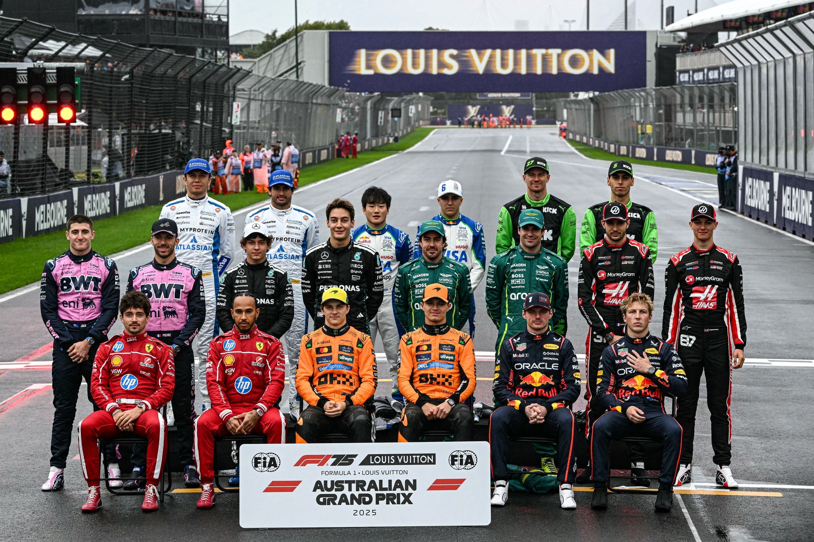
2. System components
FastF1 data pipeline
The function collect_season_driver_data goes through the 2025 race calendar, loads timing data
for each session, totals championship points per driver, and collects valid lap times across the season.
The top ten drivers with enough laps are picked as the agent cohort. Raw consistency scores (inverse of
lap-time standard deviation) are run through spread_experience_from_peers, which min-max
normalizes into [0.35, 0.95] so agents stay behaviorally distinct rather than bunched near
one value after clipping.
FastF1 2025 timing
→
Lap σ per driver
→
Top-10 by points
→
Peer normalization
→
PettingZoo agent IDs
Environment
The base environment is PettingZoo's simple_spread_v3 in parallel mode — a fully cooperative
task where N agents cover N landmarks while avoiding collisions.
N = len(driver_stats) for F1 runs; benchmark uses N = 3.
Each episode runs for up to max_cycles = 25 steps.
F1PsychologyWrapper
Sits between the environment and agents and does two things: (1) Gaussian action noise with
standard deviation (1 − experience) × 0.1, so veterans follow the policy closely and rookies
are more perturbed; (2) a psych_state in [0.5, 1] that drops by 0.2 when
team reward < −0.5 (floored at 0.5) and recovers by 0.05 otherwise. In psych-aware runs,
PsychStateObsWrapper appends ψ to observations for RLlib.
a′i = ai + 𝒩(0, (1 − ei) · 0.1)
Tabular Q-learning
Each agent has its own sparse Q-table. States are continuous observations rounded to one decimal and
flattened to a tuple; psych-aware runs append rounded psych_state. Updates use standard
one-step Q-learning with ε-greedy exploration (ε = 0.1, α = 0.1, γ = 0.95).
Q(s,a) ← Q(s,a) + α [ r + γ maxa′ Q(s′,a′) − Q(s,a) ]
Strategy Resilience Score (SRS)
SRS measures whether training improves over time relative to run noise. Given episode returns (R1,…,RT), mean return in the first and last 20% of episodes is compared, normalized by run standard deviation σ, and squashed with tanh into [0, 1]. Values above 0.5 mean late training is consistently better relative to noise. Bootstrap CIs use B = 400 resamples (5th–95th percentiles).
SRS = clip(0.5 + 0.5·tanh(z), 0, 1), z = (R̄late − R̄early) / σ
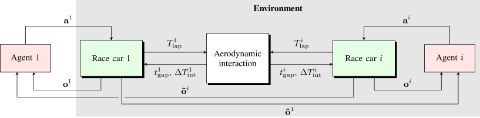
3. Environment description
PettingZoo's MPE simple_spread_v3 in parallel mode gives each agent a continuous observation of
its own position and velocity plus relative positions of all landmarks and other agents. The team reward
penalizes how far agents are from covering landmarks, so coordination is necessary.
build_experience_profiles maps PettingZoo agent names to FastF1 driver statistics. The wrapper
only changes actions and infos — not underlying physics, base observations, or the reward function.
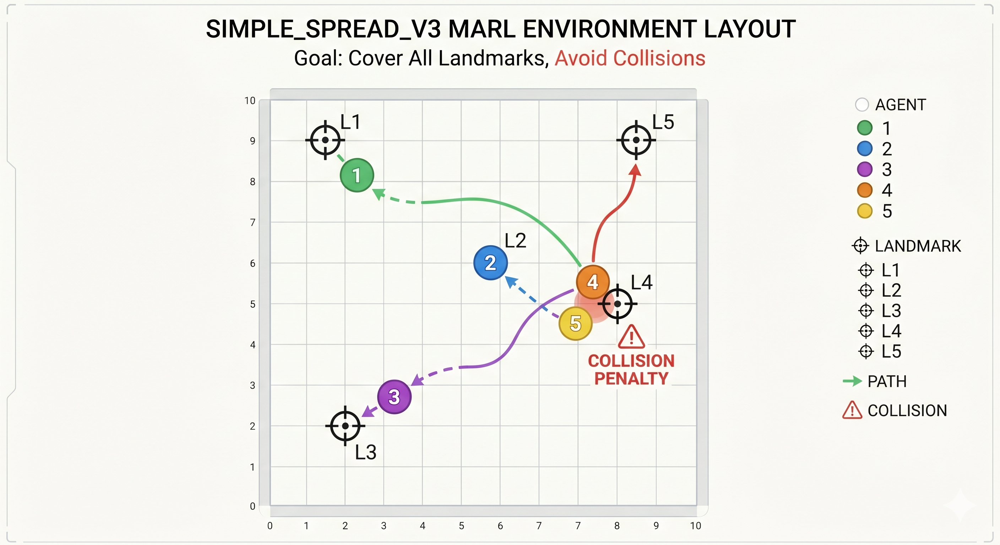
simple_spread_v3 — cooperative agents (circles) must cover landmarks (crosses)
while avoiding collisions. Team reward drives coordination.
4. Representations and architecture
Tabular setting
No neural network: state is the rounded, flattened observation tuple, with psych_state appended
in the psych-aware condition. Q-values live in a Python defaultdict keyed on that tuple.
MAPPO setting
Parameter-shared multi-agent PPO through Ray RLlib — all agents share one policy. A
JointObservationWrapper concatenates all agents' observations in fixed order and passes the
combined vector to every agent before ParallelPettingZooEnv, giving the shared actor-critic
team-level state similar to a centralized critic without a separate critic architecture.
5. Training setup and hyperparameters
Tabular agents learn independently from the same rollouts. MAPPO trains a single shared policy via
RLlib PPOConfig. Table 1 lists main hyperparameters.
| Setting | Value |
|---|---|
| Season year (FastF1) | 2025 |
| Top drivers N (main runs) | 10 |
max_cycles | 25 |
| Tabular α | 0.1 |
| Tabular γ | 0.95 |
| Tabular ε | 0.1 |
| Tabular episodes (main) | 200 |
| MAPPO learning rate | 10−4 |
MAPPO train_batch_size | 4000 |
MAPPO sgd_minibatch_size | 512 |
MAPPO num_sgd_iter | 10 |
MAPPO clip_param | 0.2 |
MAPPO entropy_coeff | 0.01 |
| MAPPO iterations | 150 |
python scripts/train_mappo.py --env f1_psych \
--driver-csv checkpoint_driver_stats.csv \
--iterations 150 --out-json results/mappo/f1_psych.json6. Training results and interpretation (tabular)
6.1 Season data: driver rankings and experience profiles
Championship points for the top-ten 2025 cohort determine which drivers become agents. Points do not directly set noise — lap-time consistency does. A driver can score well through consistent top-fives while another alternates podiums and retirements.
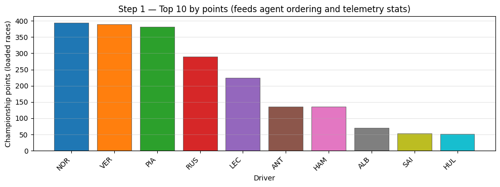
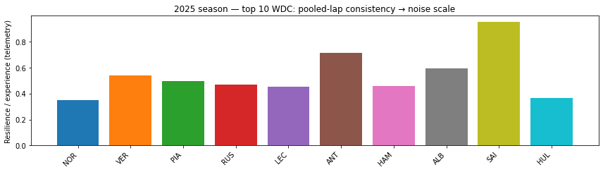
Sainz vs Antonelli sanity check. Antonelli (rookie) tends toward wider lap spread and lower
experience bars; Sainz (veteran) stays highly consistent even without top points. Printed stats include
pts, n_laps, resilience, and lap_std per driver.
| Driver | Points | Laps | Lap σ (s) | Experience |
|---|
6.2 Learning curves: team return and moving average
With ten agents the raw signal is very noisy; a 20-episode moving average is easier to read. Baseline and psych-aware traces stay in a similar range — which is why SRS is the main comparison metric.
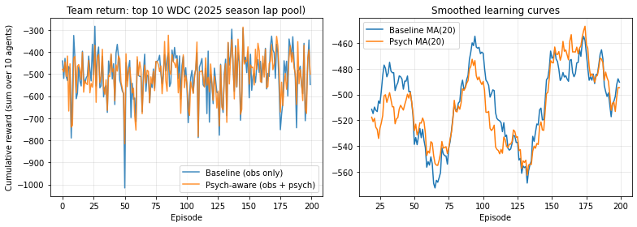
6.3 Running mean and Strategy Resilience Score
Cumulative mean team returns converge near −505 (baseline) and −510 (psych-aware), so raw return alone shows
little difference. SRS tells a different story: psych-aware ≈ 0.63 vs baseline ≈ 0.54 — late episodes improve
more consistently relative to run noise. Seeing psych_state helps develop stabler strategies even
when the performance ceiling is similar.
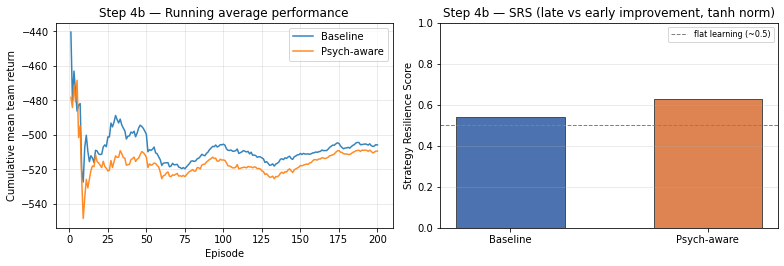
6.4 Early and late window analysis
Mean return in the first and last 20% of episodes: both conditions improve, but psych-aware shows a slightly larger gain — confirming SRS is not a normalization artifact.
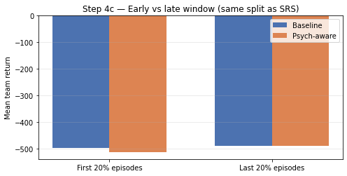
6.5 Multi-seed, epsilon sweep, and team-size ablation
Across three seeds, psych-aware has higher SRS in two of three (third near parity). Moderate ε ≈ 0.1–0.15 works best; too much exploration hurts resilience. Team size N = 5 generally beats N = 10 on SRS — fewer agents means less coordination complexity.
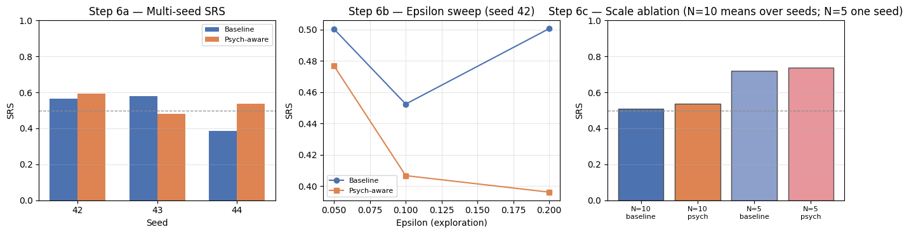
7. Evaluation summary
Tabular results
Adding psych_state to the Q-state improves learning consistency without noticeably changing final
return. Psych-aware SRS ≈ 0.63 vs baseline ≈ 0.54; bootstrap intervals do not overlap. Late-window return is
within ~1% of baseline — the SRS gain is about the training trajectory, not a raw performance boost.
Deep MARL results
MAPPO benchmark (SpreadBenchmark-v0, N = 3) reaches SRS = 0.945 and return −72.55, confirming the
implementation works. On the F1 task, psych-aware (SRS = 0.342, return −585.38) beats baseline (SRS = 0.117,
return −621.64) on both metrics. F1 runs sit well below benchmark — expected with 10 agents and roughly 10×
more negative rewards.
| Run | SRS | Bootstrap 95% CI | Final mean return |
|---|---|---|---|
| Tabular baseline | ≈ 0.54 | [0.42, 0.65] | ≈ −505 |
| Tabular psych-aware | ≈ 0.63 | [0.51, 0.74] | ≈ −510 |
| MAPPO benchmark | 0.945 | [0.313, 0.703]* | −72.55 |
| MAPPO f1_baseline | 0.117 | [0.273, 0.694] | −621.64 |
| MAPPO f1_psych | 0.342 | [0.304, 0.697] | −585.38 |
* Benchmark point SRS above reported CI: near-ceiling returns compress bootstrap percentiles below the point estimate when z is very large (tanh normalization edge case).
8. Telemetry and real-world connection
Figures 2–3 determine roster and per-agent behavior before learning. Three concrete links to real F1 data:
- Lap σ → action noise — each driver's pooled lap-time spread sets perturbation scale (e.g. Antonelli's wider 2025 distribution → more disruptive noise).
- Top-10 roster — from actual 2025 championship standings, not synthetic ordering.
- Peer normalization —
spread_experience_from_peerspreserves relative consistency within the real cohort.
Behavioral differences between agents are grounded in empirically observed 2025 variance, satisfying the course real-world RL application requirement.
9. Deep MARL: standard benchmark and MAPPO
9.1 Off-the-shelf benchmark
Standard simple_spread_v3 with N = 3 and no wrapper (SpreadBenchmark-v0) checks that
MAPPO works before F1 complexity and provides a reference for SRS and return. Random policy scores well below
−100; converging to −72.55 confirms genuine learning.
9.2 MAPPO with parameter sharing
f1_baseline: F1 roster, no psych_state in obs, action noise off.
f1_psych: PsychStateObsWrapper appends mood; action noise on. Both run 150 iterations.
9.3 MAPPO results
Benchmark climbs to ~−72. F1 runs stay in −500 to −700, but f1_psych stays above
f1_baseline — psychological observations help the shared policy. Psych SRS ≈ 0.342 is ~3× baseline
0.117, matching the tabular consistency finding.
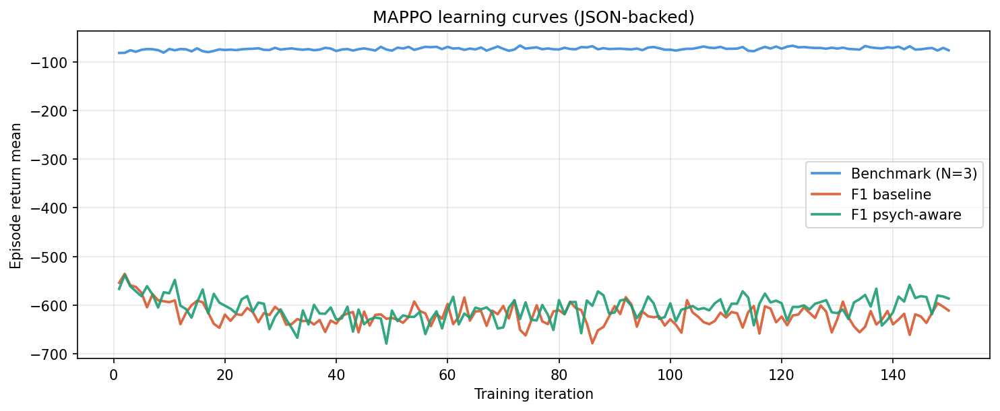
Interactive: MAPPO returns (from saved JSON)
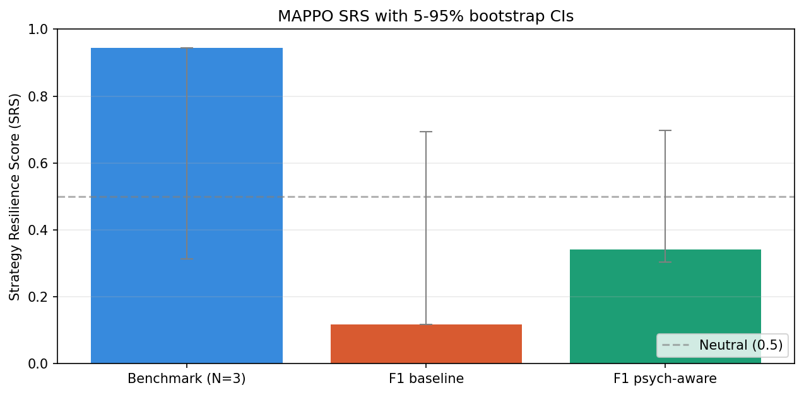
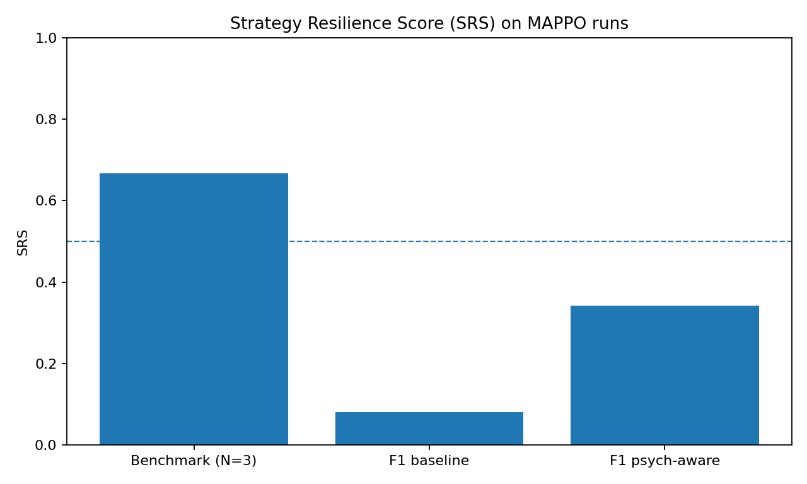
Interactive: MAPPO SRS (from saved JSON)
| Run | Iterations | Final mean return | SRS |
|---|
9.4 Adaptation curves and noise-scale ablation
psych_state trajectories for veteran SAI vs rookie ANT: Sainz stays near 1 with shallow dips;
Antonelli drops more often and recovers slower — as designed. Both trend upward in later steps as coordination
improves and large team penalties become rarer.
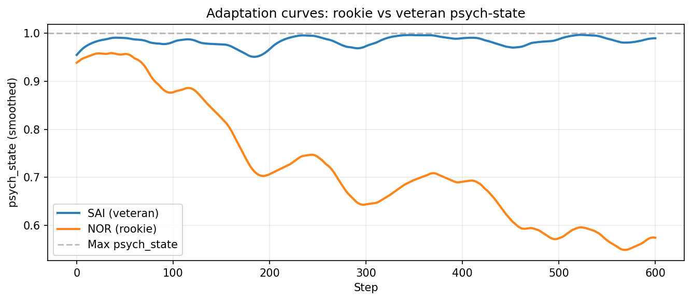
psych_state over rollout steps — veteran vs rookie.
Noise ablation at 0×, 0.5×, and 1× experience-derived perturbation: SRS changes at each scale without a clear monotonic trend — both observation augmentation and action noise contribute.
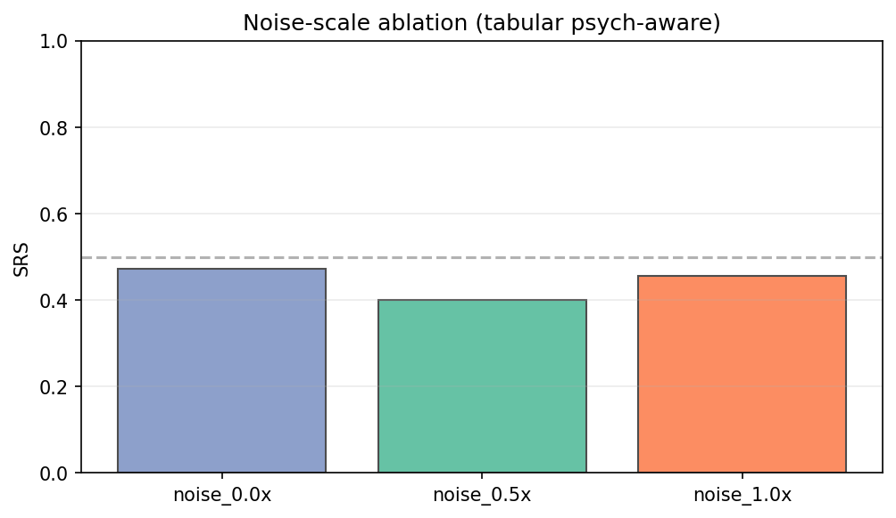
10. Overall interpretation
Tabular and MAPPO experiments point the same way: psychological state tends to improve how consistently agents learn, even when final return barely moves. SRS captures improvement in the training curve shape, not just the endpoint.
The F1-vs-benchmark gap is largely environment difficulty (10 agents, rewards near −600 vs −72). More interesting: in the harder setting, psych-aware consistently beats no-psych on SRS and final return.
A natural extension is a richer psychological state — e.g. tracking recent performance trends rather than only the current penalty — to see if resilience modeling can push returns as well as consistency.
Full source, notebook,helper.py, training scripts, and LaTeX report live on themainbranch at github.com/Kritarth-Dandapat/PaddockPsychRL.
References
- Terry, J.K., et al. PettingZoo: Gym for Multi-Agent Reinforcement Learning. pettingzoo.farama.org
- FastF1 Python API. docs.fastf1.dev
- Sutton, R.S., Barto, A.G. Reinforcement Learning: An Introduction (2nd ed.). MIT Press, 2018.
- Lowe, R., et al. (2017). Multi-Agent Actor-Critic for Mixed Cooperative-Competitive Environments. NeurIPS.
- Yu, C., et al. (2022). The Surprising Effectiveness of PPO in Cooperative Multi-Agent Games. NeurIPS.
- Fieni, G., et al. (2026). Learning-based Multi-agent Race Strategies in Formula 1. arXiv:2602.23056. arxiv.org/abs/2602.23056